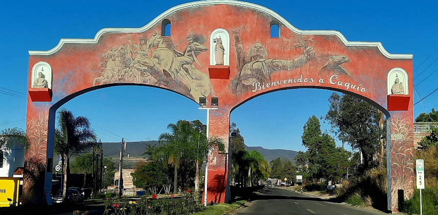

CUQUÍO
El municipio de cuquio es unos de los 125 municipios del estado mexicano de Jalisco.Su nombre deriva la
palabra Cuixi,que se significa Milano y se interpreta como "Lugar de milanos".
Codigo postal: 45480
Superficie: 643km²
Coordenadas: 2°55´39"N 103°01´26"0/20.9275 -103.02388888889.
Presidente municipal: Ubaldo Chavez Delgadillo.
